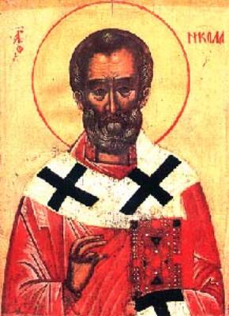

Nicholas vs. Artemis
As we’ve already seen, Bishop Nicholas was a zealous and
ardent warrior of the Church. In particular, his wrath was against the pagan
temple of Artemis in Myra.
The continued presence and
influence of the Temple of Artemis frustrated Nicholas, who had to keep the
members of his church from sliding back into pagan habits of ritual and
allegiance. No doubt, some of them – although nominally Christian – secretly
visited Myra’s Temple of Artemis for sacrifice and prayer to benefit from the
goddess’ supposed healing power.
The temple of Artemis is described as “a great pagan
altar, bigger than all others in height and width.” “I have seen the walls and
Hanging Gardens of ancient Babylon,” wrote Philon of Byzantium, “the statue of
Olympian Zeus, the Colossus of Rhodes, the mighty work of the high Pyramids and
the tomb of Mausolus. But when I saw the temple at Ephesus rising to the
clouds, all these other wonders were put in the shade.”
If it followed the pattern of numerous temples
dedicated to this goddess all over the Middle East, it consisted of large
grounds, complete with plants designed to keep the earth fresh; an inner court
surrounded by columns; an altar and a statue of Artemis.
Greek mythology speaks of
Artemis, a daughter of Zeus and Leto, as gifted with numerous powers. She was
Apollo’s twin sister, and one of the three maiden goddesses of Olympus:
“Golden
Aphrodite who stirs with love
all creation,
Cannot end nor
ensnare three hearts:
the pure maiden Vesta,
Gray-eyed Athena
who cares but for war and the arts of the craftsmen,
Artemis, lover of woods and the wild chase over the mountain.”
She was the Lady of Wild
Things, and Hunter-in-Chief to the gods. Like a good hunter, she was careful to
preserve the young; she was the “protectress of dewy youth” everywhere. The cypress was sacred to her; as were all wild
animals, especially the deer.
Nevertheless, with one of those startling contradictions so common in mythology, she kept the Greek fleet from sailing to Troy until they sacrificed a young woman to her. In many other stories, too, she was fierce and revengeful. On the other hand, when a woman died a swift and painless death, people said that she had been slain by her poisonous silver arrows.
Rivalry between Nicholas and Artemis, at least in a symbolic sense, was inevitable. Artemis was – among other things – the goddess of seafarers, bestower of fair weather and successful sea voyages.
She was also mentioned as the goddess of the harvest and the protector of grain. In addition to several stories that speak of St. Nicholas as the guardian of sailors, there is also the legend that credits him with the power to multiply grain for the people during a period of famine.
The Vita
Compilata says that Nicholas was so infuriated by the presence of the
Temple of Artemis in Myra that he destroyed it with his own hands. As the
temple was inhabited by a demon whose allegiance was to Artemis, and who sought
to prevent the bishop from carrying out his plan, the account suggests virtual
physical combat between Nicholas and the resident demon.
According to the Vita
Per Metaphrasten by St. Simeon Metaphrastes,
“Now when he discovered that many of the shrines of
the idols still existed and that the great broods of demons dwelt therein and
were disturbing some of the citizens of Myra, incensed in mind he set out with
force and holy zeal to rage through the whole infested region. Wherever he
found such a shrine, he tore it down, reducing it to dust. In this way he drove
the mass of demons away and brought about tranquillity for the folk to enjoy.
Understand, when the Saint as adversary of the Evil Spirit thus waged war, it
was the inspiration of the Supreme Being and more divine Intelligence that
effected these results for him. Eventually he did not even abstain from the
temple of Artemis, but attacked it also, doing with it as he had done with the
others.
“The temple was outstanding – remarkably beautiful
and unsurpassed in magnitude. It had been a most felicitous resort for demons.
But when Nicholas launched his attack against the temple, an attack both
vigorous and devastating, he not only destroyed everything that towered aloft,
and hurled that to earth, but he uprooted the whole from its foundations.
Indeed, what was highest, at the very pinnacle of the temple, was embedded in
the earth, and what was in the earth was impelled into the air.
“The evil
demons who had no way of withstanding the attacking Saint, fled shrieking
aloud. And they protested that they had suffered great agony at his hands and
were driven mercilessly from their possessions. Clearly, the Saint’s force in
effecting this campaign, and the attack which he launched against the demons,
brought good results.”
However, according to the Vita Per Metaphrasten, Nicholas did not destroy the temple physically:
“As soon as the Saint began praying, the altar
collapsed, and the statues of idols fell down, like leaves of a tree when a
strong wind blows in autumn. The demons who inhabited the place left, but
protested to the Saint amidst their tears: ‘You have been unjust to us. We did
you no harm, and yet you send us away from our home. We had made this our home,
while these misguided people adored us, and now where can we go?’ And the Saint
replied, ‘Go to Hell’s fire, which has been lit for you by the devil and his
crew.’ In this manner, all altars in the area were destroyed.”
The resident demon was ousted and condemned to roam the Earth.
Thought to Ponder:
Thought to Discuss around the Dinner Table:
Nicholas vs. Artemis
